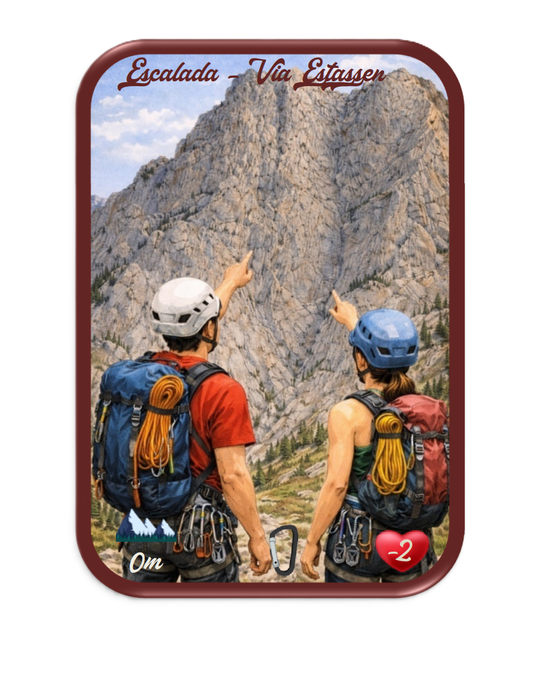
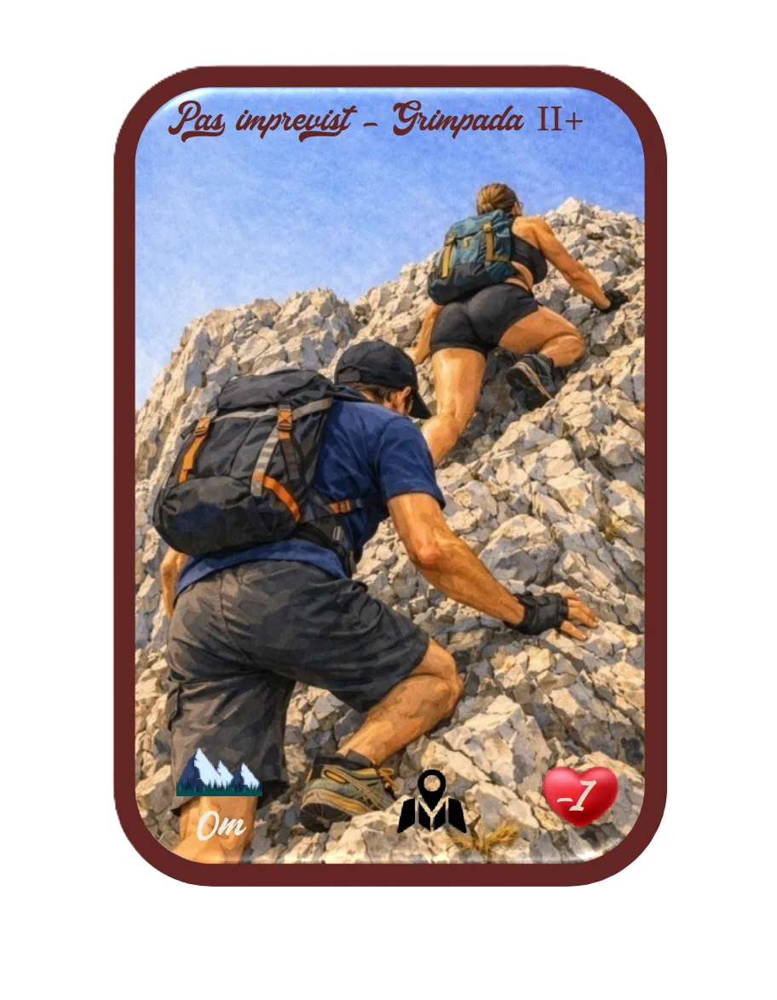

Saldes - 1.215 m
Objectiu Pedraforca 2.506 m
Una ascensió lúdica inspirada en la muntanya més emblemàtica de Catalunya.

1–4
jugadors
+10
anys
15–25
minuts
Gòsol - 1.500 m
Contingut i Objectiu
Objectiu
Assolir primer el cim del Pedraforca o tota l'expedició abans que acabi el temps.
Contingut

1 Llibret d'instruccions, història i llegendes


24 Cartes de Progressió


6 Cartes d'Alpinista


7 Cartes de Clima



12 Cartes d'esdeveniments



24 Cartes d'equipament


5 Cartes de recursos permanents


6 Cartes de fauna


5 Cartes de flora

Refugi Lluís Estasen · 1.675 m
Clima variable, events i recursos per contrarrestar-los
La muntanya mai es manté estable. El clima afecta a tots els jugadors i els esdeveniments introdueixen bloquejos, dificultats o penalitzacions que exigeixen una resposta tàctica inmediata.
Cartes de clima
Modifiquen les condicions generals d'ascensió i obligen a adaptar el plà de joc al principi de cada torn.
Cartes d'events
Representen incidèncias, passos preillosos/imprevistos, problemes en la ruta o situacions de muntanya que frenen, bloquegen o posen en perill la teva progressió.
Equipació i recursos permanents
Pots contrarrestar amenaces amb cartes d'equipació d'ús tàctic o recursos permanents, que són capaces de protegir-te indefinidament.
Preparar-se importa
No sempre convé gastar recursos al primer problema. Part de l'estratègia està en preveure quin risc pot sobrevindre i quines cartes cal reservar.
Llegir l'entorn
El joc recompensa la capacitat d'interpretar el moment: quan avaçar, quan equipar-se i quan esperar per a no quedar exposat més amunt.
Tartera · 2.050 m
Energia, desgast i gestió del risc
La gestió de les pòpies forces és un dels núclis del joc. Avançar, resistir, equipar-se o recuperar-se te un cost, i una mala gestió pot fer que l'ascensió fracasi en el pitjor moment.
Cóm es guanya i perd energia
Les pròpies forces es véuen afectades per l'esforç d'una progressió més ràpida, sota un determinat clima, esdeveniments, cartes jugades i per decisions tàctiques que impliquen major o menor desgast.
Risco acumulatiu
Forçar massa el pas et pot donar una avantatge temporal, però augmentes la probabilitat d'agotar-te quan més car resulta recuperar-se.
Primer esgotament, energia a 0
Caus al refugi anterior per recuperar 4 punts d'energia. Sigueixes la partida, però la teva situació empitjora al perdre també una carta de mà (ara jugues amb 5).
Segon esgotament
Tornes a caure al refugi per recuperar 4 més, i perds una segona carta de recursos de mà (ara jugues amb 4 cartes). Es reflecteix un deteriorament físic més important, perdua de control i capacitat de resposta. Estas en risc. La gestió de l'energia passa a ser decisiva per a seguir viu en la partida.
Tercer esgotament
Es definitiu! Produeix un accident greu i aquest alpinista no pot continuar la progressió.
Canal Verdet · 2.330 m
Regles bàsiques i mecàniques de joc
Aquí s'ordena el cor del sistema: es fixa la seqüencia del torn, es descobreix el clima i l'event, gestió de mà, progressió en altitut, ressolució d'efectes i reposició d'una o dues cartes.
Seqüencia de joc
La partida combina informació visible i decisions tàctiques permanents: apareix l'entorn, es resolen amenaces i cada jugador decideix com respondre.
Mecàniques principals
Gestió d'energia, gestió de mà, progressió vertical, control del risc, protecció amb recursos i adaptació a l'estat cambiant de la muntanya.
Corba de tensió
Quant més ascendeixes, més pesa cada error. El joc concentra cada cop més tensió fins al tram final.
Atac a cim · Cresta aérea · 2.450 m
Com es guanya
Mode competitiu
Guanya qui culmina l'ascensió primer. Qui resol millor el tram final amb una millor gestió del risc i energia en el moment de l'atac final.
Mode cooperatiu
Els jugadors formen una expedició compartida. La victoria depén d'arribar tots al cim i resistir colectivament les envestides de la muntanya abans que acabi el temps.
La cresta final resumeix l'anima del joc: precipitar-se pot ser fatal, per`esperar massa també pot condemanr l'alpinista a donar massa avantatge al rival.
Cim · 2.506 m
Aconsegueix Objectiu Pedraforca 2.506
Un joc de muntanya dissenat als Pirineus, inspirat en l'imaginari del Pedraforca i pensat per a combinar ctensió estratègica, identitat territorial i cultura excursionista.